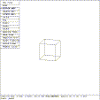
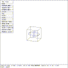

Place MGED in the SOL PICK state using one of the
above mechanisms.

Figure (t1-sol-pk): MGED In Solid Pick State
Upon entering the SOL PICK state, the display will look similar to Figure (t1-sol-pk) . The SOL PICK state used to select which of the displayed solids is to be edited. Note that the color of the solid has changed from red to white. The screen is divided into as many horizontal zones as there are solids displayed, and each zone is assigned to one solid. As the mouse is moved vertically through each zone, the corresponding solid is highlighted (``illuminated'') by drawing it in white. In this instance, there is only one solid being displayed, so this state is relatively uninteresting. If the system being used has no mouse, there is no reason to enter the SOL PICK state. The user will instead transition directly to the SOL EDIT state using the sed command.
mged> press reject
mged> e ellg
mged>
Press the sill button

Figure (t1-2s-pk): MGED In Solid Pick with Two Solids
Note that the first action taken was to reject the edit. Any time MGED is not in the VIEWING state, a reject command (via press, button, or mouse) discards all editing changes accumulated since the last transition out of the VIEWING state, and places MGED in the VIEWING state. The display should now look similar to Figure (t1-2s-pk) . Notice that one solid is white and the name of that solid is displayed in the upper left corner of the display, as well as in the bottom status line. The solid to be edited is selected by moving the mouse up and down until the zone corresponding to the desired solid is reached. Once the appropriate zone is reached, select it. This selects a solid, and once a solid is selected, MGED enters the SOL EDIT state.
{kind=link}
{kind=link}